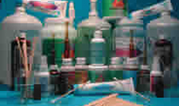

| Objetivo: |
Identificar el material comúnmente usado en el laboratorio.
|
| |
| Introducción: |
|
Es de suma importancia que los alumnos cuando ingresen en el laboratorio tengan en cuenta los riesgos que se tienen al trabajar en él; pero también es muy importante conocer el funcionamiento de los diversos materiales para tener al máximo y en lo posible un laboratorio seguro. De la misma forma cuando se trabaja en el laboratorio es requisito indispensable conocer las reglas de seguridad, para evitar accidentes.
|
|
|
| Desarrollo Experimental: |
|
Experimento 1:
Realizar la siguiente lectura
En el laboratorio se debe mantener una conducta adecuada y observar algunas medidas de seguridad; por ejemplo:
Utilizar batas.
Mantener limpio el material y mesa de trabajo.
No mezclar sustancias, rotular los frascos y siempre seguir las indicaciones del profesor para el manejo de materiales e instrumentos.
No se debe jugar en el laboratorio.
Actuar de manera irresponsable puede causar accidentes; se debe guardar silencio o hablar en voz baja y lavarse muy bien las manos antes y después de cada práctica.
Experimento 2:
Identificación de Material deLaboratorio
Realizar la siguiente lectura e ir identificando el material simultáneamente:
Tubo de ensayo. Ahí se observan las reacciones de las sustancias que se depositan en él. Los hay de diferentes medidas y sirven para preparar cultivos de bacterias y hongos.
Caja de Petri. En ella se cultivan microorganismos, como hongos o bacterias; también puede usarse para seleccionar muestras de animales. Frasco de boca y tapón esmerilados. Se usa para conservar y almacenar sustancias.
Embudo. Es útil para separar sustancias por medio de filtración y para evitar su desperdicio o derramamiento al ser cambiadas de un recipiente a otro.
Portaobjetos. Son laminillas de cristal que pueden ser cóncavas, en ellas se depositan sustancias para su observación.
Cubreobjetos. Cubren y protegen las preparaciones u objetos que se observarán al microscopio e impiden que se desprendan o muevan al ser observados.
Lupas. Son lentes convexos para la observación detallada de objetos pequeños; como partes de plantas, insectos, etcétera.
Lámpara de alcohol. Se emplea como fuente de calor cuando se requiere calentamiento lento. Al usarla debe cuidarse que la mecha esté limpia y recortada para que el calor que proporcione sea adecuado.
Lupas. Son lentes convexos para la observación detallada de objetos pequeños; como partes de plantas, insectos, etcétera.
Lámpara de alcohol. Se emplea como fuente de calor cuando se requiere calentamiento lento. Al usarla debe cuidarse que la mecha esté limpia y recortada para que el calor que proporcione sea adecuado.
Mechero de gas. Se emplea para el calentamiento rápido de sustancias.
Microscopio. Hace visibles al ojo humano objetos diminutos. Es de suma importancia en un laboratorio. Con él se han hecho avances notables en medicina, química, biología, etcétera.
Mortero. Sirve para moler, triturar sólidos o mezclar dos o más sustancias sólidas.
Estuche de disección. Contiene bisturí, agujas de disección, pinzas, tijeras, etcétera.
En el laboratorio es importante el uso de colorantes y reactivos especiales; como: El azul de metileno y el verde de metilo acético, útiles para colorear tejidos y partes específicas de la célula para luego ser observados al microscopio. Asimismo, existen reactivos químicos para diversos usos; como: ácido clorhídrico, agua oxigenada, alcohol etílico, cloroformo y éter.
|
| Resultados y Concluciones: |
|
¿Por que es importante conocer el uso de los materiales de laboratorio? |
|
|
Instrumentos del siglo XVIII |
|
| |
Laboratorio Moderno |
|
| |
Productos de Laboratorio |
 |
| |
Substancias Quimicas |
|
|